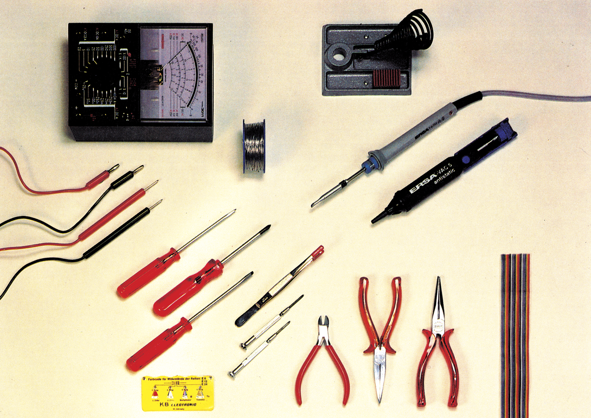
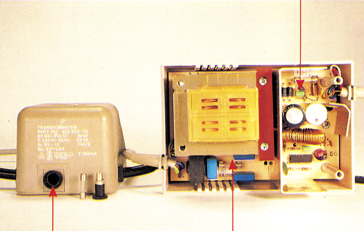
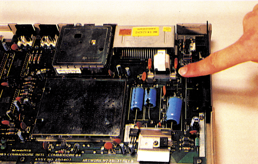

Die Axt im Haus... (1)
Nicht jeder Defekt an Ihrem Computer oder Ihrer Peripherie muß gleich hohe Kosten verursachen. Der in dieser Ausgabe beginnende Reparatur-Kurs soll Ihnen helfen, kleine Fehler selbst zu beseitigen.

Ist Ihnen das auch schon einmal passiert: Genau dann, wenn man seine Computeranlage am dringendsten braucht, gibt entweder dasFloppy-Laufwerk, der Drucker oder der C 64 den Geist auf! Der Ärger ist dann natürlich groß. Hinzu kommt, daß man bei der Vielzahl an möglichen Fehlerquellen als Laie schnell den Überblick verliert. Und: Welche Defekte kann man noch selber reparieren und wann sollte man lieber doch zum Kundendienst gehen? In diesem neuen Kurs werden wir Ihnen auf diese und viele weitere Fragen ausführliche und leicht verständliche Antworten geben.
Sie werden sich in Zukunft zu helfen wissen, wenn Ihre Geräte nicht mehr das tun, was Sie eigentlich von ihnen erwarten. Dieser Kurs soll Sie in die Lage versetzen, geschmolzene Sicherungen oder defekte Bausteine (VIC, CIA, VIA oder andere) zu lokalisieren. Mit diesem Wissen können Sie dann entscheiden, ob Sie das Gerät selbst reparieren oder die Reparatur einer Firma überlassen wollen. Doch können Sie auch in letzterem Falle noch Geld sparen: Wenn das defekte Bauteil bekannt ist, muß die Werkstatt nicht unnötig lange danach suchen.
In den nächsten Folgen werden Sie erfahren, wie Sie Drucker und Floppy säubern, einstellen und reparieren. Wir bieten Ihnen außerdem als Nachschlagewerk Schaltpläne und Meßwerte an, die für den erfahrenen Bastler von unschätzbarem Wert sind.
Am Ende dieses Kurses besitzen Sie das Fachwissen, das Sie benötigen, um unnötige Kosten bei defekten Geräten zu vermeiden.
Was an Werkzeug benötigt wird
Bevor wir mit irgendwelchen Arbeiten beginnen, müssen wir natürlich wissen, welche Werkzeuge und Meßgeräte benötigt werden. Aufdem großen Bild sehen Sie eine Auswahl, mit der wir arbeiten können. Dazu gehören:
- Diverse Schraubendreher (Kreuzschlitz und Flach in verschiedenen Klingenbreiten)
- eine kleine Flachzange
- einen Elektronik-Seitenschneider
- eine kleine Pinzette
- Entlötdrahtoder noch besser eine Entlöt-Saugpumpe
- einen kleinen Elektronik-Lötkolben (zirka 16 Watt)
- Lötzinn (| mm Durchmesser)
- Widerstands-Decodierta- belle
- Flachbandkabel (8-, 16- oder 24polig) oder normale Litze
- TTL-Logiktester (nicht auf dem Foto zu sehen)
- Multimeter mit Meßspitzen (analog oder digital)
Außerdem sind bei den Geräten folgende Sicherheitsvorschriften zu beachten:
- Achten Sie darauf, daß die richtige Netzspannung (220V) anliegt.
- Bevor Sie elektrostatische Bauteile einbauen, trennen Sie den Computer vom Netz.
- Bevor Sie elektrische oder elektronische Geräte öffnen, ziehen Sie unbedingt vorher den Netzstecker.
- Behandeln Sie die Leiterplatten mit äußerster Sorgfalt. Einige Halbleiterbausteine können sehr leicht durch statische Aufladungen zerstört werden. Entladen Sie sich durch Berühren eines mit Sicherheit geerdeten Punktes, zum Beispiel eines Heizkörpers.
- Bevor Sieirgend etwasam Computer an- oder abstecken, schalten Sie ihn aus.
- Überprüfen Sie von Zeit zu Zeit das Kabel auf Isolationsfehler oder Brüchigkeit.
- Der Computer und die weiteren Geräte besitzen zur Vermeidung von Wärmestaus Belüftungsschlitze. Verdecken Sie diese auf keinen Fall.
- Die Geräte dürfen nicht mit Wasser in Berührung kommen. Sollte dies doch einmal passiert sein, schalten Sie das Gerät sofort ab und ziehen Sie den Netzstecker.
- Ziehen Sie bei Gewitter sicherheitshalber die Netzstecker aus den Steckdosen.
- Auf das Netzkabel darf nichts gestellt oder gelegt werden.
Doch nun zur Fehlersuche. Wir beginnen mit dem Computer und gehen speziell auf die Sicherungen ein.
Gehen wir von folgendem Fall aus: Sie schalten Ihren Computer und den Fernseher (Monitor) ein... und eser- scheint kein Bild. Die erste Handlung ist das Überprüfen der Stromversorgung. Brennt die Power-LED ander Oberseite des C 64? Sind alle Geräte ordnungsgemäß angeschlossen? Kontrollieren Sie die Verbindung zu Ihrer Steckdose (zum Beispiel ausgeleierte Kontakte bei Mehrfachsteckdosen).
Möglicherweise ist im Netzkabel eine Bruchstelle aufgetreten. Eventuell bringt ein Rütteln am Kabel einen kurzfristigen Erfolg.
Ist alles korrekt, müssen wir den Fehler an anderer Stelle suchen. In Frage kommt zunächst die Spannungsversorgung.
Dazu überprüfen wir als erstes die Sicherung im Netzteil (bitte ziehen Sie zuerst den Netzstecker aus der Steckdose). Bild 1 (links) zeigt Ihnen die Lage der Sicherung (160 mA träge), die sich an der Rückseite des Netzteils befindet. Sie sitzt hinter einem Bajonett-Verschluß, der sich durch eine Vierteldrehung nach links öffnen läßt. Stellt sich nach Sichtkontrolle oder einer Überprüfung mit dem Meßgerät heraus, daß sich diese in einwandfreiem Zustand befindet, müssen wir nach der zweiten Sicherung im Computer sehen.

Dazu müssen Sie den Computer aufschrauben.
Achtung: Jeglicher Eingriff in die Geräte bringt den Garantie-Änspruch zum Erlöschen!
Lösen Sie bitte die drei Schrauben aus dem Gehäuseboden. Heben Sie den Gehäusedeckel und die Tastatur vom Gehäuseboden ab. Trennen Sie die Verbindung zwischen Tastatur und der Power-LED von der Hauptplatine Merken Sie sich aber die Lage der Steckverbindung (das rote Kabel weist in Richtung der Joystick-Ports). Nach Abnahme des Gehäusedeckels sehen Sie direkt auf die Hauptplatine des Computers. Bild 2 zeigt Ihnen die Lage der erwähnten zweiten Sicherung im C 64 (3,15 A träge). Anmerkung: Beim C 128 befinden sich beide Sicherungen (315 mA träge/ 1,4 A träge)im Netzteil (Bild 1, rechts).

Sind alle Sicherungen in Ordnung und das System verweigert dennoch seinen Dienst, müssen wir tiefer in die elektronischen Schaltkreise der Geräte einsteigen. Doch an dieser Stelle wollen wir in der folgenden Ausgabe weitermachen. Zum besseren Verständnis werden wir Schaltpläne abdrucken und die Lage der Bauteile erklären. Anhand dieser Schaltpläne und den folgenden Anleitungen wird es uns ein leichtes sein, die Fehler zu lokalisieren.
(dm)